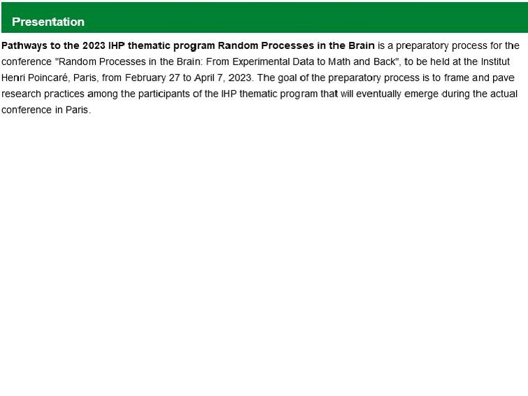
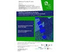

File:RPB IHP2.pdf
 No higher resolution available. |
RPB_IHP2.pdf (755 × 566 pixels, file size: 3.69 MB, MIME type: application/pdf, 37 pages)
Summary
Program slide presentation
File history
Click on a date/time to view the file as it appeared at that time.
| Date/Time | Thumbnail | Dimensions | User | Comment | |
|---|---|---|---|---|---|
| current | 20:26, 20 November 2022 |  | 755 × 566, 37 pages (3.69 MB) | Joalpe (talk | contribs) | Program slide presentation |
- You cannot overwrite this file.
File usage
There are no pages that link to this file.